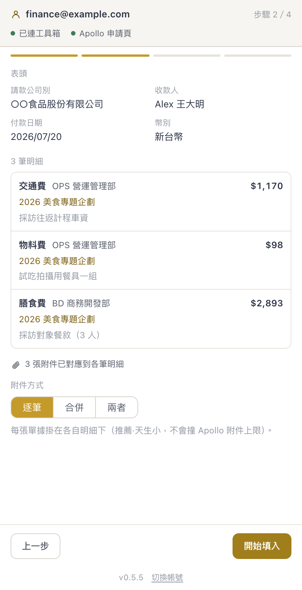
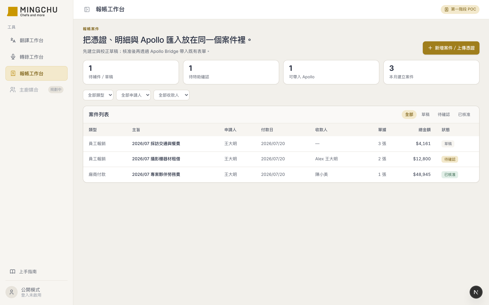
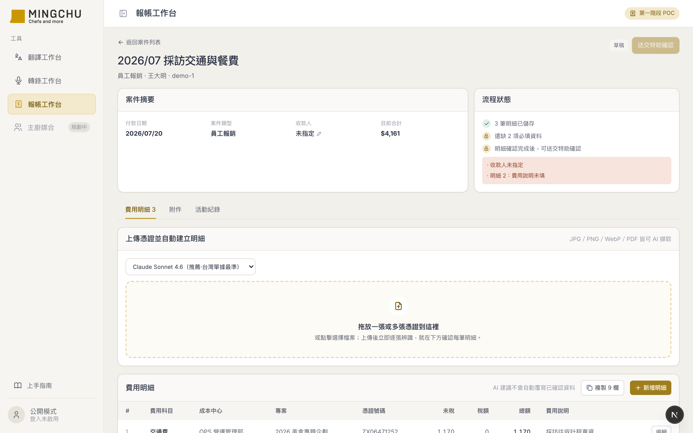
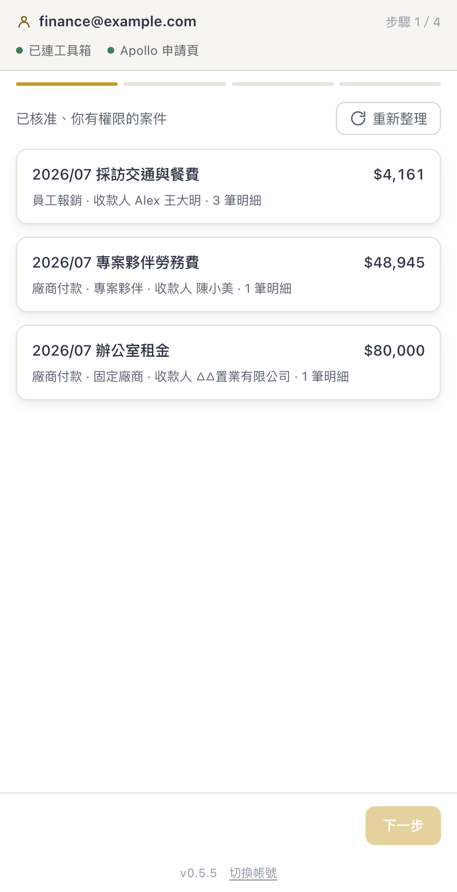
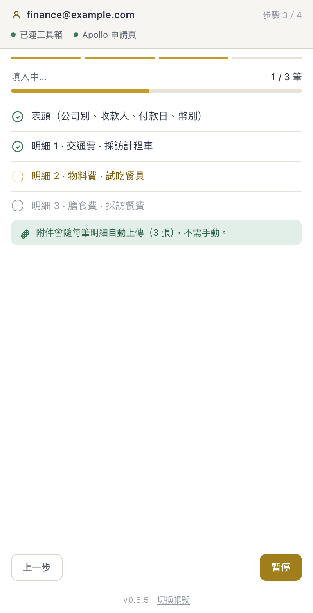
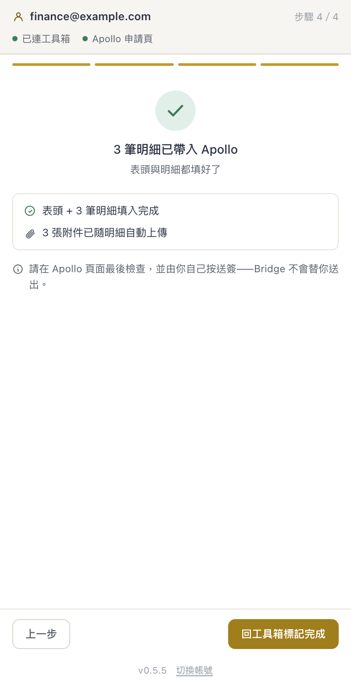

MINGCHU 報帳工作台 + Apollo Bridge 擴充套件
把「特助一個人在自己電腦上，用本機 skill＋兩個瀏覽器書籤，手動填公司報帳系統」的流程，做成團隊都能用的線上工作台，再加一個 Chrome 外掛，把已核准的案件自動填進一個沒有 API 的報帳系統。3 天、50 個 commit。整篇最值得帶走的一句話是：AI 的推理很流暢，流暢到你會忘記求證。

為什麼要做這件事
客戶（MINGCHU 名廚）的報帳流程卡在一個人身上。
特助用 Claude 的本機 skill 把收據辨識出來，再用兩個瀏覽器書籤（一段貼在網址列的 JavaScript）把資料塞進公司的 MayoHR Apollo 報帳系統。它能動，而且動得不錯。
問題不是「慢」，是「只有她能做」——工具裝在她的電腦、跑在她的瀏覽器、知識在她的腦袋。她請假，報帳就停擺。
所以真正要解的是單點依賴，不是效率。這決定了整個設計：東西必須搬到雲端、多人可用、權限分明，而且填表這一段不能重造，要移植——因為那兩個書籤是已經被真實環境驗證過的資產。
最終樣貌
兩個東西，一條鏈路。
拖上傳多張憑證（圖片或 PDF）→ 逐張顯示辨識進度 → AI 辨識金額、店家、發票號碼 → 台灣統一發票自動拆出未稅與稅額 → 明細校對 → 送特助確認 → 核准。

送出前先擋錯：資料不齊（收款人空白、費用說明沒填…）不給送確認、也不給核准，缺哪幾項直接列出來。不會等帶進 Apollo 才被表單擋、白跑一趟。

側欄只列出「已核准、你有權限」的案件——不是你的、還沒核准的，都看不到。

按下帶入之後，表頭 + 每一筆明細 + 每一張附件全自動填；逐筆看得到進度，失敗會停下來說清楚原因。介面若是英文會自動切成中文（Apollo 預設開英文，而英文版的欄位標籤會壞掉）。


系統架構
兩段。第一段是工作台（把憑證變成可信的案件資料）：
第二段是外掛（把已核准的案件填進沒有 API 的系統）：
這不是潔癖，是財務工具的底線。AI 會出錯，但它出錯的地方必須是「讀錯一個數字」（人看得出來），而不是「算錯一筆稅」（人看不出來）。
技術選型
| 工具 / 技術 | 選的理由 |
|---|---|
| Next.js + Vercel | 直接長在客戶既有的工具箱裡，不另開一個網站。登入、金鑰、部署全部沿用現成的。 |
| Google Sheets + Drive | 客戶的資料本來就在這。財務看得懂試算表，出事能自己去翻、能自己還原。 |
| OpenRouter + Claude Sonnet 4.6 | 用 7 張真實單據做過評測：Sonnet 7/7，GPT-5.1 只有 5/7（它把手寫國字金額讀錯、還漏抓發票號）。模型是測出來的，不是選出來的。 |
| Chrome Extension（MV3 側欄） | Apollo 沒有 API，只能從瀏覽器端下手。側欄比 popup 好——不會點一下就消失。 |
| 書籤既有的填表 recipe | 移植，不重造。那段 JavaScript 已經被真實環境驗證過，重寫等於把踩過的坑再踩一次。 |
AI 怎麼幫我做的
| 環節 | 誰做 |
|---|---|
| 寫程式、逆向 DOM、產生假設、寫測試 | AI |
| 業務判斷（哪些欄位算必填、金額怎麼認列）、提供真實素材（單據、測試帳號）、驗收 | 人 |
| 診斷 bug | 協作——人給症狀，AI 去查真實環境找根因 |
我幾乎不寫規格，都是貼截圖 + 描述症狀：「還是沒有附件？」「有錯誤訊息：中斷：表頭多數欄位填不進」「最上方有一個紅色區域，不知道那個目的是什麼？」
然後讓 AI 去查根因。這比我先想好「應該是什麼問題」再去問，效率高很多——因為我常常想錯。
第一個 commit 是「Codex 第一版報帳工作台 baseline（未經改動）」。先用另一個 AI 產出一個能跑的骨架，再用 Claude 一層層逼近正確。空白畫布最貴——有個可運行的錯東西，比什麼都沒有好改得多。
那兩個書籤裡有大量踩過坑才知道的細節（怎麼觸發 React 的受控輸入、哪個按鈕用一般點擊沒反應）。我請 AI 先把它抽成一份文件，而不是直接改寫成 Extension。
這一步看起來繞路，但它讓後面的填表引擎有據可依——而且當 Apollo 改版時，要改的是一份文件加一份實作，不是「去翻某段沒人看得懂的書籤」。
附件太大被 Apollo 擋下來。AI 提議：在上傳時就把照片壓縮。聽起來完全合理，我也同意了，它也做完了。
但我心裡有個疑問，就問了一句：
「會不會之前是合併的 PDF 超過大小？」
AI 去查了程式碼，發現：合併 PDF 嵌入的是原圖（只縮顯示尺寸、不縮像素），6 張加起來 15–20MB——真正爆掉的一直是它，不是個別單據。
然後更關鍵的是，我們順手用那 7 張真實單據跑了一次 OCR 評測，結果：
那個「完全合理」的方案，如果上線就是財務事故。
最後定案：單筆用原圖（OCR 最準、稽核留全清晰），只有合併 PDF 在後端降圖（那時 OCR 早就跑完了，零風險）。實測 11.1MB → 2.9MB。
踩到的坑
根本原因：壓縮會落在 OCR 前面。手寫國字金額本來就是最難讀的，壓過再讀，「肆仟伍佰肆拾伍」變成 1,555。
解法：壓縮只放在產物上（合併 PDF，OCR 之後），原始憑證一律不動。
根本原因：填表程式無條件回報成功——它按了「確認」，但沒檢查表單有沒有真的收下。
解法：按完確認後，驗證「已新增 N 筆」有沒有增加、視窗有沒有關掉，才算成功。
根本原因：憑直覺列的清單裡，「專案／項目」和「發票號碼」看起來都該是必填。
解法：直接去讀 Apollo 表單上每個欄位標籤有沒有那顆紅色星號——結果那兩個都不是必填。照猜的做，會擋掉合法案件。
根本原因：那個元件的樣式有 display: flex，它蓋過了瀏覽器內建的隱藏規則。程式回報「已隱藏」，畫面照樣顯示。
解法：加一條全域規則讓「隱藏」真的能贏。
根本原因：解析登入憑證時用了非 UTF-8 安全的解碼。如果 Google 帳號的名字是中文，解碼會爆掉 → 憑證被誤判過期 → 每次都要重新登入。
解法：改用 UTF-8 安全的解法，並補上中文名字的測試案例。
Takeaway
整個專案裡，AI 寫的程式碼幾乎都對。出事的地方全部是「大家一起合理地推理，然後推錯」。三次關鍵時刻，都是靠「去查」而不是「去想」翻盤的——原本以為壓縮圖片可以解決附件過大，跑了 OCR 評測才發現它會讓 AI 把 4,545 讀成 1,555；原本以為「專案／項目」該是必填，去讀 Apollo 表單的星號才發現不是，當必填會誤擋；原本以為程式說隱藏了就是隱藏了，截圖一看東西還在畫面上。AI 最危險的時候，不是說「我不知道」，是說「這樣做很合理」。
「我要自動化一個沒有 API 的網頁系統。我手上有一段能動的舊腳本。請先不要改寫它——先幫我把它逆向成一份文件：它依賴哪些 DOM 結構、哪些操作順序是必要的、哪些地方是踩過坑才這樣寫的。我要先看懂，再決定怎麼重寫。」
「我打算在〔某個步驟〕加上〔壓縮／裁切／轉檔〕。這個處理會不會落在 AI 的輸入端？如果會，請幫我設計一個用真實素材的評測，證明它不影響辨識結果——在我們改之前。」